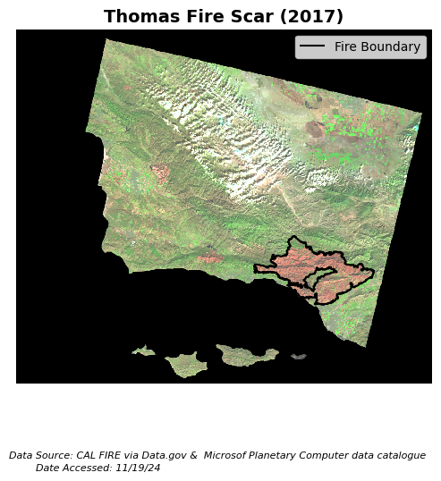

import os
import pandas as pd
import matplotlib.pyplot as plt
import geopandas as gpd
import xarray as xr
import rioxarray as rioxr
import numpy as nptitle: “My First Post” description: “A short catchy description of the blog post.” author: - name: Carmen Hoyt url: https://ceh58.github.io/ affiliation: MEDS affiliation-url: https://bren.ucsb.edu/masters-programs/master-environmental-data-science date: 2024-10-18 categories: [Quarto, MEDS, something-cool] toc: true page-layout: full image: whales.jpg citation: url: https://ceh58.github.io/posts/2024-10-18-my-first-post/ draft: true
False Color Analysis
Carmen Hoyt
GitHub Repo
About:
- Purpose:
The purpose of this task is to use false color imagery to visualize the impact (the burn scar) of the Thomas Fire in 2017.
- Highlights:
This task explores assigning infrared bands to visible colors and plotting shapefiles over the resulting images. Necessary steps include cleaning rasters and matching Coordinate Reference Systems (CRSs).
- Dataset description:
Landsat Data: Pre-processed, simplified collection of bands (red, green, blue, nir, swir) from Landsat Collection 2 Level-2 (collected by Landsat 8 satellite). Accessed: November 19, 2024
- References:
Landsat Data: Microsoft Open Source, Matt McFarland, Rob Emanuele, Dan Morris, & Tom Augspurger. (2022). microsoft/PlanetaryComputer: October 2022 (2022.10.28). Zenodo. https://doi.org/10.5281/zenodo.7261897
For Fire Perimeter data information, see fire-perimeter.ipynb.
3. True Color Image
# a. Import data
fp = os.path.join("/courses/EDS220/data/hwk4_landsat_data", "landsat8-2018-01-26-sb-simplified.nc")
landsat = rioxr.open_rasterio(fp)
landsat.head(3)<xarray.Dataset> Size: 424B
Dimensions: (band: 1, x: 3, y: 3)
Coordinates:
* band (band) int64 8B 1
* x (x) float64 24B 1.213e+05 1.216e+05 1.218e+05
* y (y) float64 24B 3.952e+06 3.952e+06 3.952e+06
spatial_ref int64 8B 0
Data variables:
red (band, y, x) float64 72B ...
green (band, y, x) float64 72B ...
blue (band, y, x) float64 72B ...
nir08 (band, y, x) float64 72B ...
swir22 (band, y, x) float64 72B ...# b. Preliminary exploration
print('Sizes of dimensions:', dict(landsat.sizes))
print('attrs:', landsat.attrs)
print(landsat.dims, landsat.coords)
landsatSizes of dimensions: {'band': 1, 'x': 870, 'y': 731}
attrs: {}
FrozenMappingWarningOnValuesAccess({'band': 1, 'x': 870, 'y': 731}) Coordinates:
* band (band) int64 8B 1
* x (x) float64 7kB 1.213e+05 1.216e+05 ... 3.557e+05 3.559e+05
* y (y) float64 6kB 3.952e+06 3.952e+06 ... 3.756e+06 3.755e+06
spatial_ref int64 8B 0<xarray.Dataset> Size: 25MB
Dimensions: (band: 1, x: 870, y: 731)
Coordinates:
* band (band) int64 8B 1
* x (x) float64 7kB 1.213e+05 1.216e+05 ... 3.557e+05 3.559e+05
* y (y) float64 6kB 3.952e+06 3.952e+06 ... 3.756e+06 3.755e+06
spatial_ref int64 8B 0
Data variables:
red (band, y, x) float64 5MB ...
green (band, y, x) float64 5MB ...
blue (band, y, x) float64 5MB ...
nir08 (band, y, x) float64 5MB ...
swir22 (band, y, x) float64 5MB ...This array has three dimensions, and one band (band) with five variables: red, green, blue, nir08, and swir22. There were no attributes included.
# c. Drop the 'band' dimension
landsat = landsat.squeeze().drop_vars('band')# Confirm 'band' was dropped
print(landsat.dims, landsat.coords)FrozenMappingWarningOnValuesAccess({'x': 870, 'y': 731}) Coordinates:
* x (x) float64 7kB 1.213e+05 1.216e+05 ... 3.557e+05 3.559e+05
* y (y) float64 6kB 3.952e+06 3.952e+06 ... 3.756e+06 3.755e+06
spatial_ref int64 8B 0# d. Select 'red', 'green', and 'blue' variables and plot
landsat[['red', 'green', 'blue']].to_array().plot.imshow()Clipping input data to the valid range for imshow with RGB data ([0..1] for floats or [0..255] for integers).<matplotlib.image.AxesImage at 0x7fd656a5a810>
# e. Adjust the scale for a true color plot
landsat[['red', 'green', 'blue']].to_array().plot.imshow(robust = True)<matplotlib.image.AxesImage at 0x7fd6550d99d0>
- The first plot is black and white while the second is in true color. The robust parameter, when set to True, de-weights outliers to properly scale the color bands and produce a colored image.
4. False color image
# Create a false color image
landsat[['swir22', 'nir08', 'red']].to_array().plot.imshow(robust = True)<matplotlib.image.AxesImage at 0x7fd65419a290>
5. Map
# Import Thomas Fire shapefile
thomas_fire = gpd.read_file(os.path.join("data", "thomas_fire.shp"))# Make sure CRSs match
if thomas_fire.crs == landsat.rio.crs:
print("CRSs match!")
else:
landsat = landsat.rio.reproject(thomas_fire.crs)
assert landsat.rio.crs == thomas_fire.crs
print("We matched the CRSs!")We matched the CRSs!# a. Map the false color image with the fire perimeter
landsat_aspect_ratio = landsat.rio.width/landsat.rio.height
fig, ax = plt.subplots(figsize = (6, 6*landsat_aspect_ratio))
ax.axis("off")
landsat[['swir22', 'nir08', 'red']].to_array().plot.imshow(ax = ax,
robust = True)
thomas_fire.boundary.plot(ax = ax,
color = "black")
ax.legend(labels = ["Fire Boundary"])
fig.text(0.5, 0.1,
'Data Source: CAL FIRE via Data.gov & Microsof Planetary Computer data catalogue',
ha='center', va='center', fontsize=8, color='black', fontstyle='italic')
fig.text(0.395, 0.08,
'Date Accessed: 11/19/24',
ha='right', va='center', fontsize=8, color='black', fontstyle='italic')
ax.set_title("Thomas Fire Scar (2017)", fontsize=14, fontweight='bold')
plt.show()
- This figure shows the burn scar from the Thomas Fire in 2017. By assigning infrared bands to visible colors (short wave infrared to red, near infrared to green, and red to blue), we can easily distinguish the burn scar from the surrounding vegetation. This is because bare earth reflects swir (short wave infrared), appearing red, and healthy vegetation reflects nir (near infrared), appearing green.